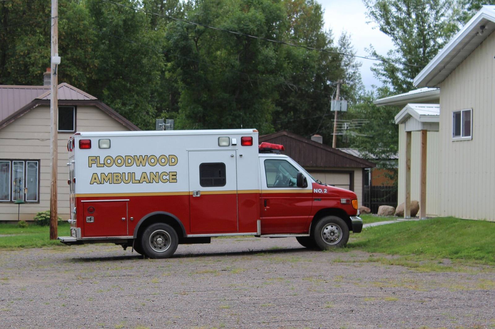

As of July 2026, 19 states and the District of Columbia had enacted legislation that uses the word “essential” to define emergency medical services, according to the National Conference of State Legislatures.1 Thirty-one states had not.
The word does less than it sounds. NCSL’s list includes two legislative resolutions (Montana and South Dakota, both 2025), an Illinois clause about what an ambulance fund may buy, and a Maine law that applies “for purposes of eligibility for federal funding.”1 One state on the list pairs the word with a duty. Since May 2022, South Carolina law has said each county governing body “shall ensure that at least one licensed ambulance service is available within the county.”2 NCSL separately names Hawaii and North Carolina as states that make counties responsible for EMS without using the word.1
This article shows what follows where no government is obliged to provide an ambulance. The service is financed mostly by billing the patients it transports, and federal cost data published in June 2026 show that this model sustains large services and fails small ones. It matters now for three reasons. Colorado, Georgia and Oklahoma all added designations in 2026.1 Medicare has its first national data set on what ambulance service costs.3 And the temporary Medicare payments that rural services depend on end on December 31, 2027.3
Medicare pays for the ride, not for the ambulance
Medicare has paid for ground ambulance service under a national fee schedule since 2002. It makes one payment for the transport and one for the miles. The Medicare Payment Advisory Commission (MedPAC), which advises Congress, puts the rule plainly: the payments “occur only if an ambulance response results in a patient transport. Responses that do not result in a transport are not covered.”3
In 2024, about 10,600 ambulance organizations delivered 11.3 million transports to traditional Medicare beneficiaries, and Medicare paid $5.3 billion for them.3 Dividing one by the other gives roughly $469 per transport. That is our arithmetic, not a published rate, and it averages emergencies with scheduled nonemergency trips.
The rates were not built from costs. MedPAC writes that the factors used to adjust payments “generally are not based on cost data,” and that many have not changed since they were introduced.3 Three temporary add-ons sit on top: 2 percent for urban transports, 3 percent for rural, and a further 22.6 percent for the most sparsely populated “super-rural” areas.3 Congress renews them in short steps. In January 2026 they were due to end on January 30 before a 23-month extension moved the date to the end of 2027.4
An ambulance and its crew cost about the same whether they run two calls in a shift or ten. The fee schedule pays nothing for the hours between calls, and nothing for a call that ends with the patient treated and left safely at home.
Federal cost data show small services cannot break even
In 2018 Congress ordered the Centers for Medicare & Medicaid Services to collect cost and revenue data from ambulance organizations. The resulting Ground Ambulance Data Collection System covers 2022 and 2023 and about 71 percent of all ground ambulance organizations.3 MedPAC published its assessment in June 2026.
Cost per transport ran from $367 at the 10th percentile to $4,136 at the 90th. Volume explains most of the spread. Organizations in the lowest quarter by volume averaged 148 transports a year at a mean cost of $2,878 each. Those in the highest quarter averaged 15,291 transports at $918 each.3
MedPAC then compared total revenue from every source with total cost, setting government-owned services aside. For organizations in the lowest volume quarter the median ratio was 0.77, or 77 cents of revenue for each dollar of cost. In the highest quarter it was 1.10.3
Geography by itself is not the cause. Mean cost per transport was $1,018 for urban services and $997 for rural ones, rising to $1,263 only in super-rural areas.3 The cause is low call volume, which is what a thinly settled service area produces.
The sources do not agree on the size of the problem. The Government Accountability Office, using 2010 data from a smaller sample, found a median cost of $429 per transport, a range of $224 to $2,204, and a median Medicare margin of about plus 2 percent with the add-ons and minus 1 percent without.5 MedPAC’s figures are means, not medians, from a larger and later sample that includes government-owned services. MedPAC also warns that its revenue comparisons “should be viewed cautiously” because most organizations had never reported such data before.3 Both agencies agree on the direction: volume drives cost.
A transport-only model leaves gaps on the map
The Maine Rural Health Research Center mapped ambulance stations in 41 states for 2021 and 2022. It found 4.5 million people living more than 25 minutes from the nearest station, 2.3 million of them (52 percent) in rural counties. Four in five counties had at least one such “ambulance desert.” Nine states could not be studied at all because they lacked data on where ambulances are based.6 The center published updated maps in April 2026.7


The model also leans on cheap and free labor. The median EMT earned $44,470 a year in May 2025, below the $50,980 median for all occupations; paramedics earned $60,600.8 A Maine legislative commission wrote in December 2022 that the cost data understate the true cost because the system relies on “volunteerism, low wages and donated labor.”9
Taxpayers already fill part of the gap, unevenly. Fifty-five percent of ambulance organizations are government owned, and 52 percent of those organizations’ revenue comes from sources other than billing, such as local government funding, grants and donations.3
On closures the record is thin. Maine’s commission asked for $25 million aimed at services “at immediate risk of failing and leaving their service area without access to adequate EMS.”9 We could not find a national count of ambulance service closures from a primary source, and we have left the circulating figures out.
The case against a mandate is serious
The first objection is local control. A county in the Great Basin and a suburb of Atlanta do not need the same system, and voters do not always want to pay. Iowa lets each county decide: supervisors may declare EMS essential and ask voters to approve a tax. In November 2022, eight Iowa counties voted. Five cleared the 60 percent threshold and three did not.10
The second is cost. A duty without money is an unfunded mandate on the smallest tax bases. Maine’s commission put the shortfall at roughly $70 million a year and recommended that amount annually for five years.9 The Legislature enacted $31 million in 2023, once.11
The third is efficiency. MedPAC found that a 10 percent increase in transports raises total cost by only 7 percent. For-profit organizations reported a mean cost of $563 per transport against $1,626 for government-owned ones, although for-profits ran far more nonemergency trips (48.7 percent of their transports, against 8.9 percent) and less intensive ones.3 Paying every small service to stay as it is could lock in the most expensive structure. In 2013 MedPAC itself recommended letting the temporary add-ons expire and redirecting the money to low-volume services in isolated areas.3
These objections are about how to fund readiness, and who should decide. They do not show that billing per transport can pay for it.
States that acted mostly bought time
South Carolina (2022) named a responsible government, the county, and stopped there.2 We found no published evaluation of the result.
Iowa (2021) gave counties a tool: a voter-approved income surtax or a property tax of up to 75 cents per $1,000 of assessed value.1 Kossuth County’s levy was expected to raise more than $1 million for two EMS hubs and small-town volunteer services.10 Where the vote failed, nothing changed.

Maine (2022 to 2025) wrote the essential-service finding into statute, studied the gap, then funded part of it: $12 million in stabilization grants from February 2024 and $19 million in sustainability grants that opened in March 2025.911 That is less than half of one year of the gap its own commission measured.
Minnesota (2024) appropriated $24 million in one-time aid to licensed ambulance services, with some large metropolitan license holders excluded, and $6 million for a pilot in Otter Tail, Grant and St. Louis counties, in which a single paramedic in a response vehicle reaches the patient ahead of the ambulance.1213 We did not find published results.
Utah (2025) deemed 911 ambulance service essential and created a Critical Needs Account for grants.1
Medicare tested paying for care without a hospital transport. Its Emergency Triage, Treat, and Transport model selected 205 applicants in 36 states and D.C. and had 151 participants by June 2023. CMS ended it early, on December 31, 2023, citing “lower than expected participation and lower than projected interventions.”14
The pattern is one-time money and pilots. Iowa’s levy authority and South Carolina’s duty are the structural changes, and each supplies half of what is needed.
Four things to ask for
- Name the duty and attach recurring money. A state statute should say which government must ensure an ambulance responds, and give it a standing revenue source. South Carolina has the first half and Iowa the second. The word “essential” by itself funds nothing.
- Pay for readiness where volume is low. Low-volume, geographically isolated services need a base payment that does not depend on transports. MedPAC proposed that targeting in 2013, and the 2022 and 2023 cost data now make it calculable. States should apply the same test to their own aid, and may fairly require regional consolidation in return.
- Pay for treatment in place. Medicare should cover a response that ends with appropriate care and no transport as a standing benefit. A voluntary pilot that closed for low participation is not evidence that the care is unneeded.
- Settle rural payment before December 31, 2027. Congress should replace last-minute extensions with a permanent, targeted rural policy, and should keep collecting cost data, as MedPAC recommended by a vote of 14 to 0.3 States should publish ambulance station locations so that the nine unmapped states can be measured.
Fire protection is budgeted for being ready. The federal data now available say that EMS, at least where calls are few, cannot be financed any other way.
ProtoQuiz maintains a public census of U.S. EMS protocols at protoquiz.com/census.